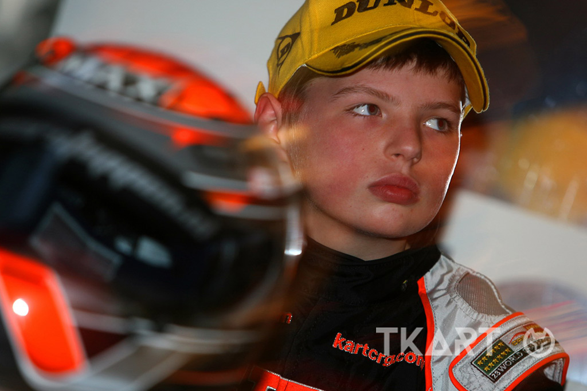

Max Verstappen, born on September 30, 1997, in Hasselt, Belgium, is a Dutch Formula 1 driver renowned for his exceptional talent and competitive spirit.
Son of former F1 driver Jos Verstappen and Belgian karting champion Sophie Kumpen, Max was immersed in racing from a young age.
He made his F1 debut in 2015 with Scuderia Toro Rosso at just 17, becoming the youngest driver to start a Grand Prix.
In 2016, he joined Red Bull Racing and won the Spanish Grand Prix, setting the record as the youngest F1 race winner.
Over the years, Verstappen has secured multiple World Championships, solidifying his status as one of the sport's leading figures.
Off the track, Max's personal life has recently taken a joyful turn.
On May 2, 2025, he and his partner, Brazilian model Kelly Piquet, daughter of three-time F1 world champion Nelson Piquet, welcomed their first child together, a daughter named Lily.
Young years
Max Verstappen was born into a world of racing on September 30, 1997, in Hasselt, Belgium. By the time he was just two years old, he was already showing interest in motorsport, often seen around his father's racing activities. His father, Jos Verstappen, a former Formula 1 driver, and his mother, Sophie Kumpen, a talented kart racer herself, provided the perfect environment for Max to grow up in the sport.
At the age of four, Max started karting. He quickly impressed with his natural speed and focus. Over the following years, he dominated karting competitions in Belgium and the Netherlands, often racing against older children and still coming out on top. His father took a hands-on role in coaching him, traveling across Europe to compete in top-tier karting events.
By the age of 10, Max had already won several championships and was becoming known as one of the most promising young talents in the karting world. From age 12 to 15, he competed internationally, winning prestigious titles like the WSK Euro Series and the World Karting Championship. His skill, racecraft, and fearless driving made it clear that he was on a fast track to professional racing.
In 2014, at just 16 years old, Max made the jump to single-seater racing, competing in the FIA Formula 3 European Championship. Despite it being his rookie season, he won 10 races and caught the attention of top teams. Later that year, Red Bull Racing signed him to their junior program, and incredibly, Max was announced as a Formula 1 driver for Scuderia Toro Rosso in 2015. At just 17 years old, he became the youngest driver in F1 history, marking the start of a remarkable career.
Current life
By the time Max Verstappen turned 20 in 2017, he was already an established Formula 1 driver with Red Bull Racing. Though still very young, he had proven himself as one of the most aggressive and talented racers on the grid. Over the next few years, he matured both on and off the track, becoming more consistent and focused while maintaining his trademark speed and determination.
Between 2020 and 2021, Max emerged as a serious title contender. In 2021, he won his first Formula 1 World Championship after a dramatic and controversial season finale in Abu Dhabi, defeating Lewis Hamilton. This victory marked the beginning of a dominant era.
From 2022 onward, Verstappen continued to dominate the sport, winning multiple races and securing more world titles with Red Bull. His partnership with the team, especially with engineer Gianpiero Lambiase and car designer Adrian Newey, proved to be one of the most successful in modern F1.
Off the track, Max’s personal life also evolved. He’s in a relationship with Brazilian model Kelly Piquet, and in May 2025, they welcomed their first child, a daughter named Lily.
Now in his mid-20s, Max Verstappen is not only a multiple-time World Champion but also one of the most recognized and influential figures in the sport.
